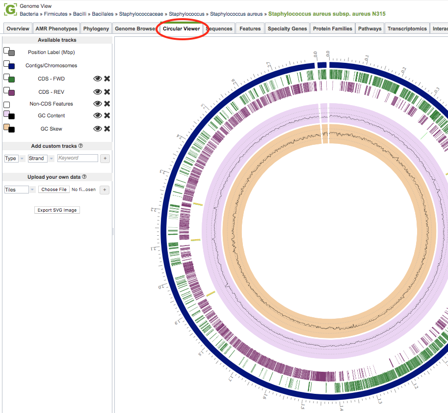
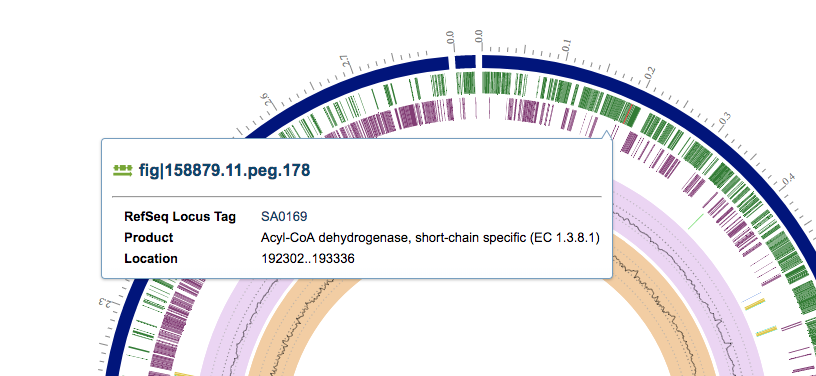
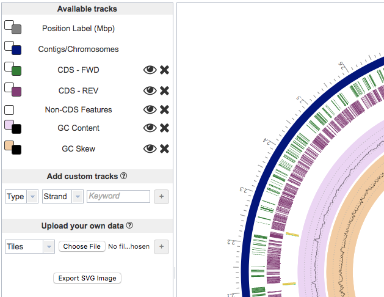

Circular Genome Viewer¶
Overview¶
The Circular Genome Viewer provides a circular interactive graphical representation of the alignment of genes and other genomic data.
See also¶
Accessing the Circular Genome Viewer¶
Clicking the Circular Viewer tab in a Genome View displays the interactive Circular Genome Viewer, shown below.

The Circular Genome Viewer provides a circular interactive graphical representation of the alignment of genes and other genomic data. The tracks on the viewer are displayed as concentric rings, from outermost to innermost: Position, Contigs/Chromosomes, CDS-forward, CDS-reverse, Non-CDS Features, GC Content, and GC Skew. Features and functionality of the viewer are described in detail below.
Circular Genome Viewer Features and Functionality¶
Circular Genome Viewer Main Window:¶

The main window on the right side shows the circular view, which has interactive features triggered by mouseovers and mouse-clicks.
View the Genome information by mousing over or clicking on a contig
View the Feature information by mousing over or clicking on a feature
Tracks Panel:¶

The Available Tracks Panel on left lists all available tracks in the Circular Viewer.
Show/hide tracks by clicking on the eye icon to the right of the track name.
Remove tracks by clicking the “X” to the right of the track name.
Change the color of the track or background by clicking on the small squares to the left of the track name.
*Add a custom track by selecting feature type, strand and keywords to show genes of interest.
Add a custom track of your own data by choosing the display option (Tile, Line, Histogram, or Heatmap) and choosing a file containing annotations or gene lists as GFF3 files; or RNA-Seq, ChIP-Seq, or SNP data as BigWig or BAM files.
Export an SVG image by clicking the Export SVG Image button.